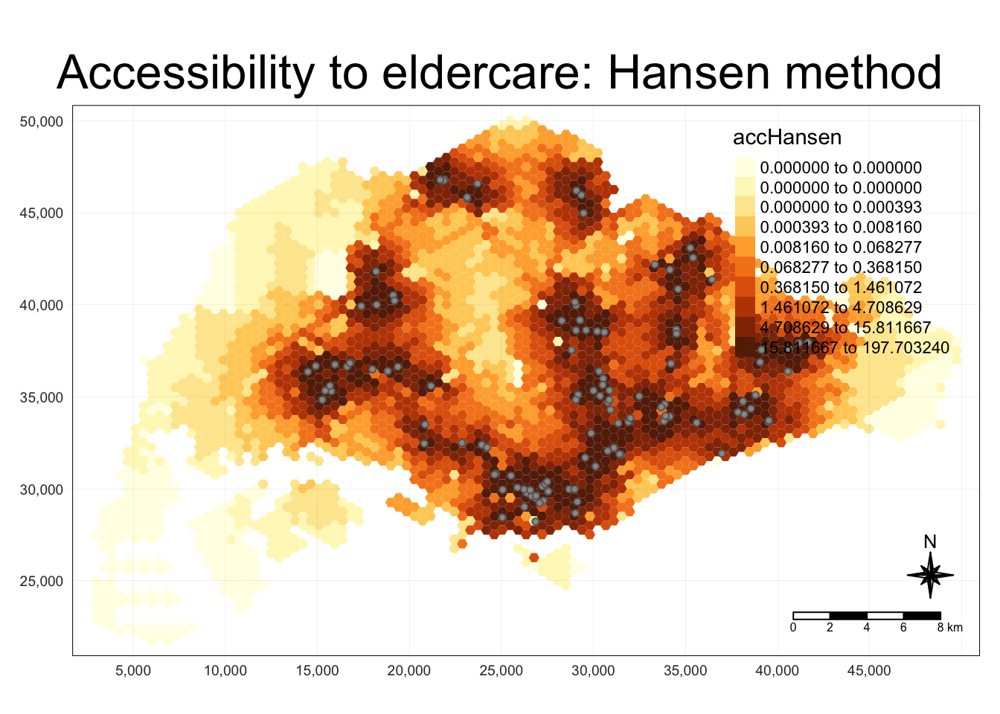

In-class Exercise 11: Modelling Geographical Accessibility
1 Getting Started
2 The Data
Four data sets will be used in this hands-on exercise, they are:
MP14_SUBZONE_NO_SEA_PL: URA Master Plan 2014 subzone boundary GIS data. This data set is downloaded from data.gov.sg.
hexagons: A 250m radius hexagons GIS data. This data set was created by using st_make_grid() of sf package. It is in ESRI shapefile format.
ELDERCARE: GIS data showing location of eldercare service. This data is downloaded from data.gov.sg. There are two versions. One in ESRI shapefile format. The other one in Google kml file format. For the purpose of this hands-on exercise, ESRI shapefile format is provided.
OD_Matrix: a distance matrix in csv format. There are six fields in the data file. They are:
origin_id: the unique id values of the origin (i.e. fid of hexagon data set.),
destination_id: the unique id values of the destination (i.e. fid of ELDERCARE data set.),
entry_cost: the perpendicular distance between the origins and the nearest road),
network_cost: the actual network distance from the origin and destination,
exit_cost: the perpendicular distance between the destination and the nearest road),
and total_cost: the summation of entry_cost, network_cost and exit_cost.
The OD matrix will take a long time to run if using road network.
All the values of the cost related fields are in metres.
Reminder: Except MP14_SUBZONE_NO_SEA_PL data set, the other three data set are specially prepared by Prof. Kam for teaching and research purpose. Students taking IS415 Geospatial Analytics and Applications are allowed to use them for hands-on exercise purpose. Please obtain formal approval from Prof. Kam if you want to use them for other courses or usage.
3 Geospatial Data Wrangling
Importing geospatial masterplan subzone layer from 2014
mpsz <- st_read(dsn = "data/geospatial", layer = "MP14_SUBZONE_NO_SEA_PL")Reading layer `MP14_SUBZONE_NO_SEA_PL' from data source
`/Users/annatrw/annatrw/IS415MAC/In-class_Ex/In-class_Ex11/data/geospatial'
using driver `ESRI Shapefile'
Simple feature collection with 323 features and 15 fields
Geometry type: MULTIPOLYGON
Dimension: XY
Bounding box: xmin: 2667.538 ymin: 15748.72 xmax: 56396.44 ymax: 50256.33
Projected CRS: SVY21Importing in the hexagon layer
hexagons <- st_read(dsn = "data/geospatial", layer = "hexagons") Reading layer `hexagons' from data source
`/Users/annatrw/annatrw/IS415MAC/In-class_Ex/In-class_Ex11/data/geospatial'
using driver `ESRI Shapefile'
Simple feature collection with 3125 features and 6 fields
Geometry type: POLYGON
Dimension: XY
Bounding box: xmin: 2667.538 ymin: 21506.33 xmax: 50010.26 ymax: 50256.33
Projected CRS: SVY21 / Singapore TMImport the eldercare services layer
eldercare <- st_read(dsn = "data/geospatial", layer = "ELDERCARE") Reading layer `ELDERCARE' from data source
`/Users/annatrw/annatrw/IS415MAC/In-class_Ex/In-class_Ex11/data/geospatial'
using driver `ESRI Shapefile'
Simple feature collection with 120 features and 19 fields
Geometry type: POINT
Dimension: XY
Bounding box: xmin: 14481.92 ymin: 28218.43 xmax: 41665.14 ymax: 46804.9
Projected CRS: SVY21 / Singapore TM3.1 Update CRS Information
mpsz <- st_transform(mpsz, 3414)
hezagons <- st_transform(hexagons, 3414)
eldercare <- st_transform(eldercare, 3414)This st_transform step is not a major requirement since original projections are in SVY21 which is still valid. But transforming to EPSG3414 is the conventionally used CRS
st_crs(mpsz)Coordinate Reference System:
User input: EPSG:3414
wkt:
PROJCRS["SVY21 / Singapore TM",
BASEGEOGCRS["SVY21",
DATUM["SVY21",
ELLIPSOID["WGS 84",6378137,298.257223563,
LENGTHUNIT["metre",1]]],
PRIMEM["Greenwich",0,
ANGLEUNIT["degree",0.0174532925199433]],
ID["EPSG",4757]],
CONVERSION["Singapore Transverse Mercator",
METHOD["Transverse Mercator",
ID["EPSG",9807]],
PARAMETER["Latitude of natural origin",1.36666666666667,
ANGLEUNIT["degree",0.0174532925199433],
ID["EPSG",8801]],
PARAMETER["Longitude of natural origin",103.833333333333,
ANGLEUNIT["degree",0.0174532925199433],
ID["EPSG",8802]],
PARAMETER["Scale factor at natural origin",1,
SCALEUNIT["unity",1],
ID["EPSG",8805]],
PARAMETER["False easting",28001.642,
LENGTHUNIT["metre",1],
ID["EPSG",8806]],
PARAMETER["False northing",38744.572,
LENGTHUNIT["metre",1],
ID["EPSG",8807]]],
CS[Cartesian,2],
AXIS["northing (N)",north,
ORDER[1],
LENGTHUNIT["metre",1]],
AXIS["easting (E)",east,
ORDER[2],
LENGTHUNIT["metre",1]],
USAGE[
SCOPE["Cadastre, engineering survey, topographic mapping."],
AREA["Singapore - onshore and offshore."],
BBOX[1.13,103.59,1.47,104.07]],
ID["EPSG",3414]]3.2 Cleaning Up Data
Retain necessary fields from the eldercare and hexagon data
eldercare <- eldercare %>%
select(fid, ADDRESSPOS) %>%
rename(destination_id = fid,
postal_code = ADDRESSPOS) %>%
mutate(capacity = 100)- select fid and ADDRESSPOS to retain
- rename destination id to fid and postal code to ADDRESSPOS
- assign a value of 100 to all rows in capacity field
hexagons <- hexagons %>%
select(fid) %>%
rename(origin_fid = fid) %>%
mutate(demand = 100)4 Aspatial Data Wrangling
ODMatrix <- read_csv("data/aspatial/OD_Matrix.csv", skip = 0)The rows represent origins (i.e. also know as from field) and the columns represent destination (i.e. also known as to field.)
The code chunk below uses spread() of tidyr package is used to transform the O-D matrix from a thin format into a fat format.
distmat <- ODMatrix %>%
select(origin_id, destination_id, total_cost) %>%
spread(destination_id, total_cost)%>%
select(c(-c('origin_id')))Note: Since tidyr version 1.0, a new function called pivot_wider() is introduced. You should use pivot_wider() instead of spread().
Currently, the distance is measured in metre because SVY21 projected coordinate system is used. The code chunk below will be used to convert the unit f measurement from metre to kilometre.
distmat_km <- as.matrix(distmat/1000)For SpatialAcc package to run, the D (distance) input has to be in a distance matrix data type and not a table or dataframe. Where col is distance, row is origin, individual cell gives distance.
4.1 Importing Distance Matrix (optional)
eldercare_coord <- st_coordinates(eldercare)
hexagons_coord <- st_coordinates(hexagons)EucMatrix <- SpatialAcc::distance(hexagons_coord,
eldercare_coord,
type = "euclidean")5 Modelling Accessibility using Hansen Method
Now, we ready to compute Hansen’s accessibility by using ac() of SpatialAcc package. Before getting started, you are encourage to read the arguments of the function at least once in order to ensure that the required inputs are available.
The code chunk below calculates Hansen’s accessibility using ac() of SpatialAcc and data.frame() is used to save the output in a data frame called acc_Handsen.
acc_Hansen <- data.frame(ac(hexagons$demand,
eldercare$capacity,
distmat_km,
#d0 = 50,
power = 2,
family = "Hansen"))- input a vector: capacity field from eldercare data
- threshold will be 50km if uncommented
- family is using the Hansen method
colnames(acc_Hansen) <- "accHansen"acc_Hansen <- tbl_df(acc_Hansen)hexagon_Hansen <- bind_cols(hexagons, acc_Hansen)- combine the accessibility output and hexagon
- bind_cols() use as long as there was no sorting of the row’s order
# running the above 3 code chunks together
acc_Hansen <- data.frame(ac(hexagons$demand,
eldercare$capacity,
distmat_km,
#d0 = 50,
power = 0.5,
family = "Hansen"))
colnames(acc_Hansen) <- "accHansen"
acc_Hansen <- tbl_df(acc_Hansen)
hexagon_Hansen <- bind_cols(hexagons, acc_Hansen)5.1 Visualising Model Output
mapex <- st_bbox(hexagons)- allowing the map extent to encompass the whole study area Singapore
tmap_mode("plot")
tm_shape(hexagon_Hansen,
bbox = mapex) +
tm_fill(col = "accHansen",
n = 10,
style = "quantile",
border.col = "black",
border.lwd = 1) +
tm_shape(eldercare) +
tm_symbols(size = 0.1) +
tm_layout(main.title = "Accessibility to eldercare: Hansen method",
main.title.position = "center",
main.title.size = 2,
legend.outside = FALSE,
legend.height = 0.45,
legend.width = 3.0,
legend.format = list(digits = 6),
legend.position = c("right", "top"),
frame = TRUE) +
tm_compass(type="8star", size = 2) +
tm_scale_bar(width = 0.15) +
tm_grid(lwd = 0.1, alpha = 0.5)
- bbox = map extent derived previously
- Accessibility
5.2 Statistical Graphic Visualisation
hexagon_Hansen <- st_join(hexagon_Hansen, mpsz,
join = st_intersects)ggplot(data=hexagon_Hansen,
aes(y = log(accHansen),
x= REGION_N)) +
geom_boxplot() +
geom_point(stat="summary",
fun.y="mean",
colour ="red",
size=2)
- log transformation of hansen values to have better visibility (if no log transform, box plots will be flat and hard to see the proper distribution of values)
6 Modelling Accessibility using KD2SFCA Method
acc_KD2SFCA <- data.frame(ac(hexagons$demand,
eldercare$capacity,
distmat_km,
d0 = 50,
power = 2,
family = "KD2SFCA"))
colnames(acc_KD2SFCA) <- "accKD2SFCA"
acc_KD2SFCA <- tbl_df(acc_KD2SFCA)
hexagon_KD2SFCA <- bind_cols(hexagons, acc_KD2SFCA)